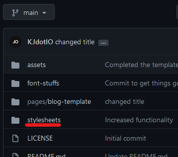
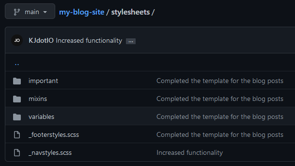

Introduction to me, what this entire blog is for,
and the tools used to make it.
Pretty self explanatory.


21st March · 5mins
This is the first post I’ve made to this website. I’m excited to share who I am, my reasoning for this entire website, where I am and where I’m going from here.
So... Who am I?
You probably know me by dot or dotIO. Or you’ve noticed I’ve put “KJ” in front of it. Either way, you can call me KJ. I’m a 17 year old student from London with experience with Graphic design, Video editing, Motion design, and Trading. I’m looking to expand into Frontend Development, which ill get into later on.
Pretty self explanatory.
The point of this website and blog.
You’re probably wondering why I didn't just create a medium account and post on there. The thing is, I wanted to actually build something. I wanted to improve my skills with HTML and CSS (JS soon, too), as well as continuously commit to my GitHub with detailed commits. The other point was to document my journey through Web Development. I believe its important to document where you were, where you are now, and where you see yourself in the long run.
There were some other things too, like writing articles on things like Foreign Exchange, Tech, Web Development, and other things I’m interested in. This website shouldn’t be mistaken for a portfolio site, though. That would make it already messier than it is trying to add more static pages. I mean, the navbar links are dead anyway; they're there for show (although, i’ll probably make them functionable later). I’m going to look into Svelte in order to make it a little cleaner, but for now: HTML, CSS.
How this was made possible
This entire blog page was made possible with good old vanilla HTML and CSS, with the help of SCSS. The funny thing is that I knew this entire project would be incredibly repetitive and time consuming, and so the use of indentations, mixins and linking of template stylesheets. Keeping code clean was my priority, and so I created separate folders containing SCSS fonts, variables, mixins and the blogs template and stylesheet.
Stylesheet screenshot
Stylesheet folders and templates including footer styles, nav styles, variables, and more.
I didn’t create the design, though, the credit goes to an amazing designer named Mika Matikainen. Her social media pages will be linked bellow. She will also be credited in the footer section of every one of the pages in this blog post. She also creates some dope posts, too. Click here to visit her website. You can also grab the design file in her blog post written here.
Where to now?
The next stages are to create my next post about web development, and also work on a redesign project for a friend in Hungary. I’ll also be looking to add a few things here and there on the blog pages to make it more ‘full’. I’ll also be looking to build my actual portfolio site, which I’ll get the design from Figma also. I also plan to move my blog into that portfolio site, and create an even bigger project. My next blog post will be on how I stumbled into Web development.
Mika Matikainen’s links


PLACEHOLDER
This is a placeholder for future articles.